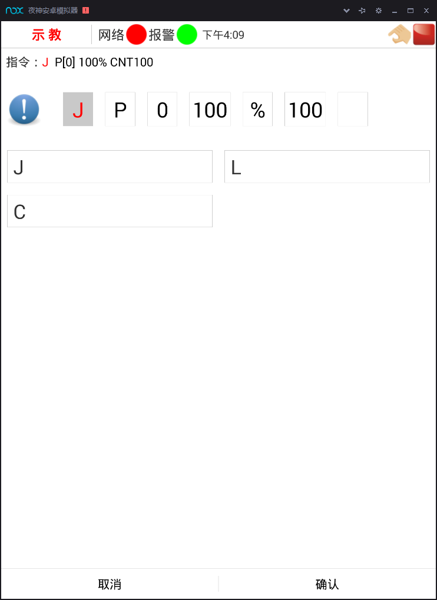
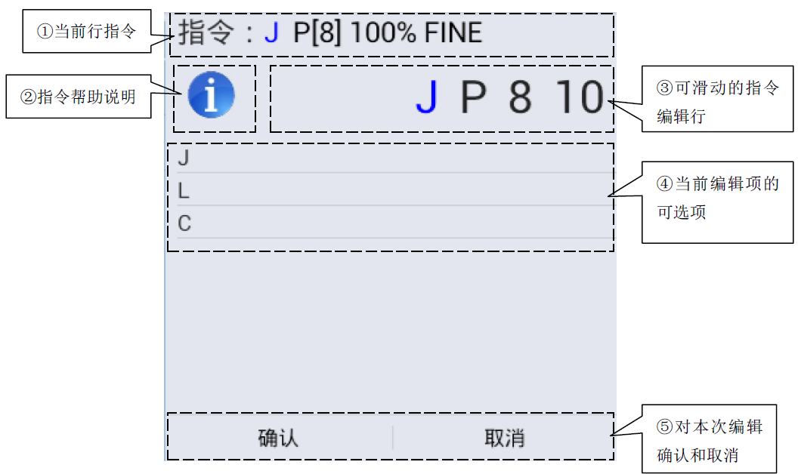
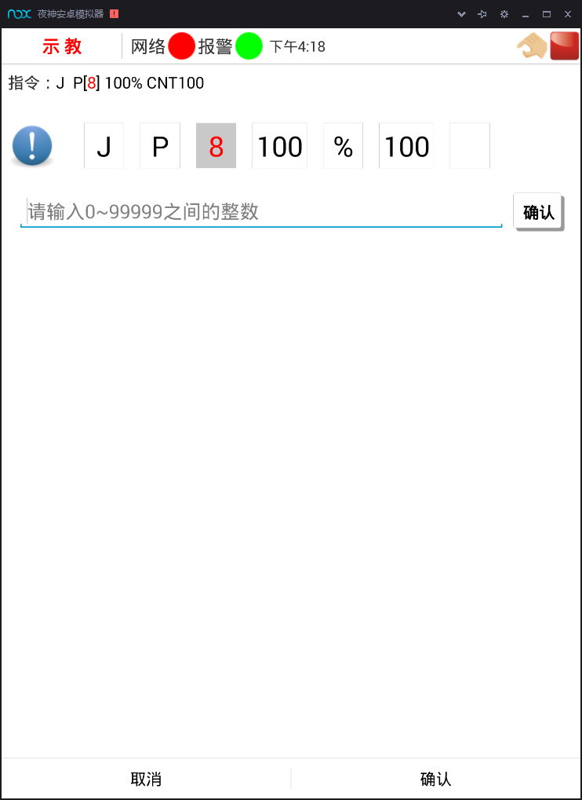
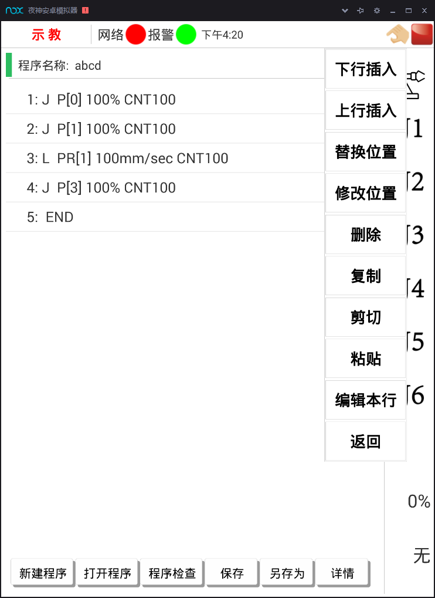
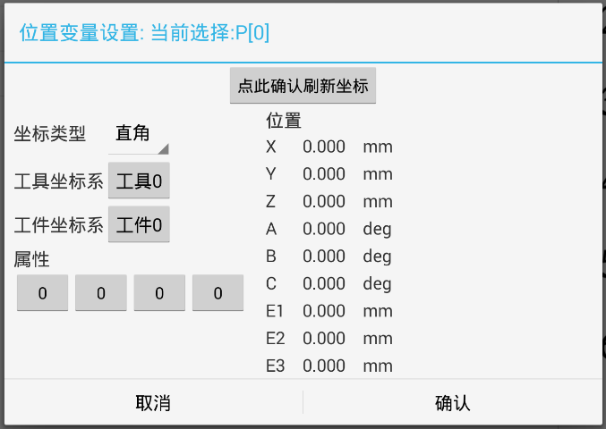
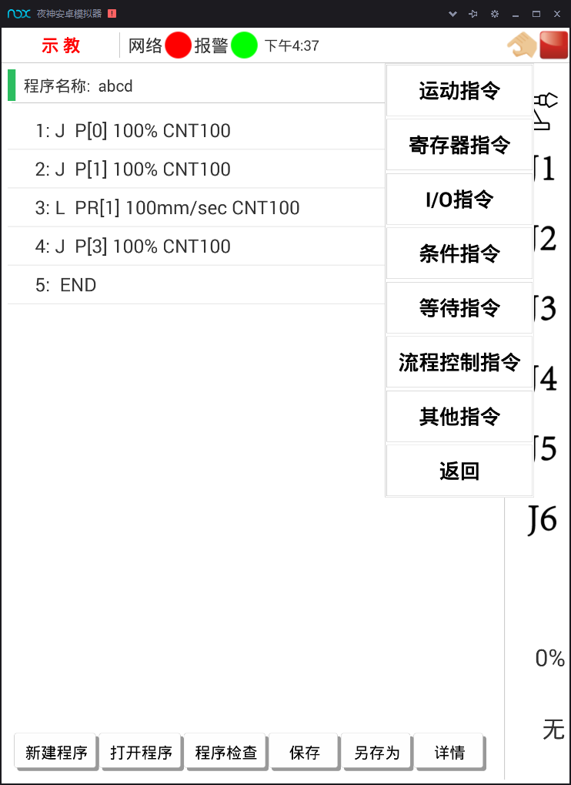
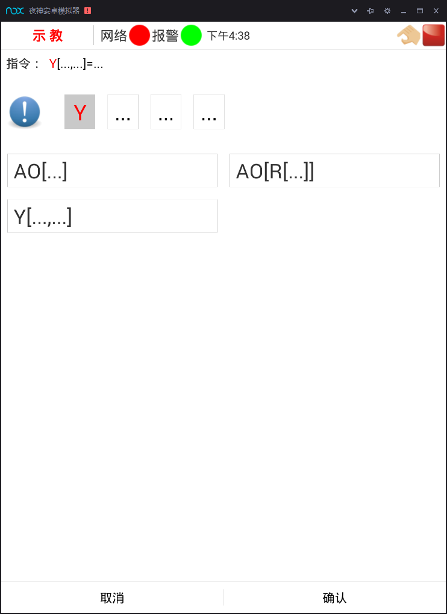

2.1新建、编辑和加载程序
2.1.4程序编辑、修改
示教主要提供程序编辑、修改功能，对于触摸屏手持器，本机器人控制系统提供两种操作方式即：短按和长按。
1、行内编辑（短按）
短按任一行（即点击）的程序语句（最后一行“END”除外），可对该行程序语句的内容进行编辑。以运动指令为例，如图2-4所示：

图2-4 行内编辑
本行编辑界面设计如下：

图2-5 本行编辑
①当前指令行：显示当前编辑的指令行，其中蓝色显示的是当前的编辑项；
②指令帮助说明：点击帮助图标后，显示指令类型说明，运动指令时，弹出帮助对话框如图2-6所示：
图2-6 指令帮助对话框
③可滑动指令编辑行：蓝色高亮显示部分即为当前的编辑项，可左右滑动，以选择当前的编辑项；
④当前编辑项的可选项：根据当前编辑项，显示当前可选择项的选项，如“J”指令的可选项为“J”、“L”和“C”；
⑤本次编辑的确认和取消：点击“确认”后，即可将本次编辑好的指令替换旧的编辑行。或点击“取消”按钮，取消当前编辑。
对指令行中的数据进行编辑时，界面将显示如图2-7所示：

图2-7 指令行内编辑界面
点击输入框，输入数据后点击“确认”，即可完成数据的编辑。
2、行编辑（长按）
长按任一行的程序语句，可对该行程序语句做整体操作，包括删除、复制、剪切、粘贴、修改位置、上行插入、下行插入等，如图2-8所示：

图2-8 程序编辑对话框
(1) 删除：删除当前的选择行；
(2) 复制：复制当前选择的行内容到粘贴板；
(3) 剪切：复制当前选择的行内容到粘贴板，并删除当前行；
(4) 粘贴：当前行后移，将粘贴板上的信息粘贴为当前行；
(5) 位置修改： 若当前行含有位置变量P或者位置寄存器PR，且位置号都是直接寻址的（即 为“P[常量]”或“PR[常量]”），长按当前行时，修改位置菜单颜色变为可操作，即可以对当前行的位置信息进行查看或修改。
在弹出的操作菜单中选择“修改位置”，弹出如图2-9所示对话框：

图2-9 位置变量设置
点击确认刷新坐标，在对话框左边进行坐标类型选择和工具坐标系及工件坐标系的选择，右边显示坐标值的修改，坐标值刷新为机器人当前位置数据。也可直接点击坐标值进行修改。
点击“确认”按钮，即可完成位置修改。或点击“取消”按钮，取消当前修改。
3、插入（上行或下行）
根据指令行插入的位置，插入操作分为上行插入和下行插入。
上行插入：是在当前所选择指令的前一行插入指令；
下行插入：是在当前所选择指令的后一行插入指令。
下面以上行插入为例，介绍插入指令行的操作方法。
（1）在图2-8的界面中选择“上行插入”选项，弹出如图2-10所示指令选择框：

图2-10 指令类型选择界面
（2）选择指令类型，如选择“I/O指令”，界面切换至IO指令的编辑对话框；

图2-11 I/O指令编辑对话框
（3）该编辑界面即为行内的编辑界面，编辑完成后点击确认即可完成上行插入操作。
4、编辑本行
可对本行程序进行编辑，如同短按程序行进行行内编辑效果是一样的。